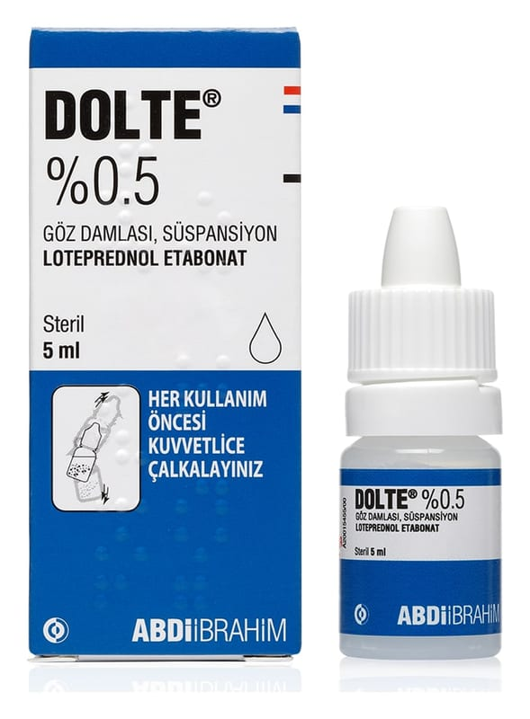

Dolte %0.5 Göz Damlası Süspansiyonu

Ne için kullanılır
KT · Bölüm 1DOLTE, kortikosteroidler adı verilen bir ilaç grubuna aittir. Beyaz renkli homojen süspansiyon içeren 5 ml'lik şeffaf LDPE (düşük yoğunluklu polietilen) şişelerde sunulur. Gözde çeşitli uyaranlar ile ortaya çıkan iltihabı (kızarıklık, ağrı, şişkinlik, kaşıntı vb.) ortadan kaldırmaktadır. Bu amaçla, -gözdeki çeşitli yapıların alerjik ve iltihabi hastalıklarının tedavisinde kullanılır. Ayrıca, göz cerrahisini takiben ameliyat sonrası oluşan iltihabın tedavisinde de kullanılır.